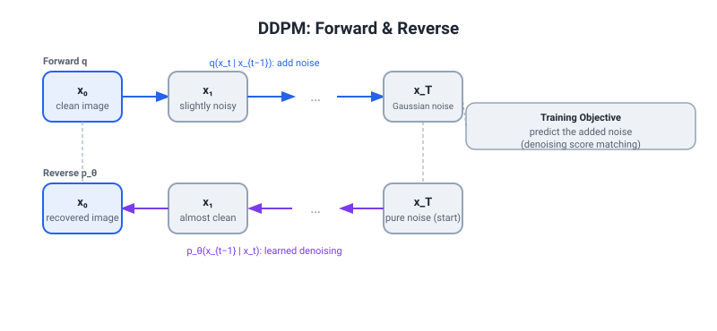
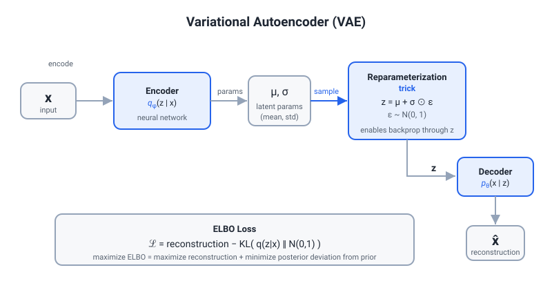
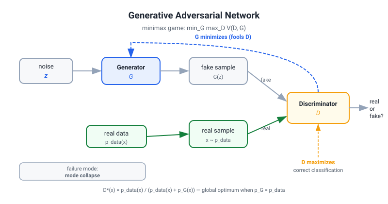
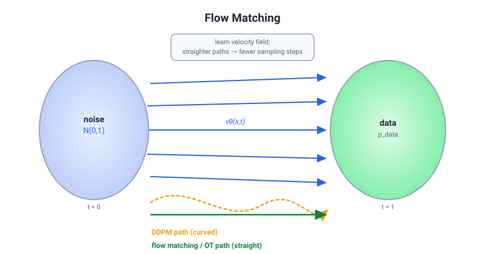

13 — Generative Models Beyond LLMs
How to use: Read top-to-bottom once, then drill the Q→Model Answer→Hard Follow-up triples aloud. The final section "Is Diffusion Weights Actually Diffusion?" is the one Versley WILL ask — rehearse that answer until it is reflexive. Math notation follows standard ML convention; equations use LaTeX-style for clarity.
1. DDPM — Denoising Diffusion Probabilistic Models

1.1 Conceptual Backbone
DDPM (Ho et al., NeurIPS 2020) defines a Markov chain that progressively corrupts data with Gaussian noise over T steps, then learns to reverse that corruption. The key insight is that reversing a small, well-characterized Gaussian perturbation is a tractable supervised regression problem, even though reversing corruption all at once (directly generating an image from noise) is not.
1.2 Forward Process q
The forward process is fixed (no learnable parameters):
q(x_t | x_{t-1}) = N(x_t ; sqrt(1 - beta_t) * x_{t-1}, beta_t * I)
where beta_1, ..., beta_T is a noise schedule (typically monotonically increasing, e.g., beta_1 = 1e-4, beta_T = 0.02 for linear schedule with T=1000).
Key reparameterization (marginal in closed form): Define alpha_t = 1 - beta_t and alpha_bar_t = prod_{s=1}^{t} alpha_s. Then the marginal at any timestep can be sampled directly without iterating:
q(x_t | x_0) = N(x_t ; sqrt(alpha_bar_t) * x_0, (1 - alpha_bar_t) * I)
This means x_t = sqrt(alpha_bar_t) * x_0 + sqrt(1 - alpha_bar_t) * epsilon, where epsilon ~ N(0, I). This is critical: during training you can instantly sample any corruption level from the clean image, without running T Markov steps.
As t -> T, alpha_bar_T -> 0 so q(x_T | x_0) ≈ N(0, I) — pure noise. This is the prior from which sampling begins at inference.
1.3 Reverse Process p_theta
The reverse process is also a Markov chain, but parameterized with a neural network:
p_theta(x_{t-1} | x_t) = N(x_{t-1} ; mu_theta(x_t, t), Sigma_theta(x_t, t))
Ho et al. fix Sigma_theta = sigma_t^2 * I (not learned) and only learn the mean mu_theta. This already works well in practice; Nichol & Dhariwal (DDPM++/improved DDPM, ICML 2021) later learn Sigma_theta via an interpolation in log-space parameterization.
1.4 ELBO — The Training Objective
The variational lower bound on log p_theta(x_0):
L = E_q[ -log p_theta(x_0 | x_1) ] (reconstruction)
+ sum_{t=2}^{T} E_q[ KL(q(x_{t-1}|x_t, x_0) || p_theta(x_{t-1}|x_t)) ] (denoising terms)
+ KL(q(x_T|x_0) || p(x_T)) (prior matching, ~0 by design)
The middle KL terms are tractable because q(x_{t-1}|x_t, x_0) is Gaussian in closed form (Bayesian posterior of the forward process):
q(x_{t-1} | x_t, x_0) = N(x_{t-1} ; tilde_mu_t(x_t, x_0), tilde_beta_t * I)
where tilde_mu_t(x_t, x_0) = [sqrt(alpha_bar_{t-1}) * beta_t / (1 - alpha_bar_t)] * x_0 + [sqrt(alpha_t) * (1 - alpha_bar_{t-1}) / (1 - alpha_bar_t)] * x_t.
Simplified epsilon-prediction objective: Ho et al. reparameterize mu_theta to predict the noise epsilon rather than the mean:
mu_theta(x_t, t) = (1/sqrt(alpha_t)) * (x_t - (beta_t / sqrt(1 - alpha_bar_t)) * epsilon_theta(x_t, t))
This yields the simplified loss (after dropping constant prefactors from the KL):
L_simple = E_{t, x_0, epsilon} [ || epsilon - epsilon_theta(sqrt(alpha_bar_t) * x_0 + sqrt(1 - alpha_bar_t) * epsilon, t) ||^2 ]
This is just mean-squared error between the true injected noise epsilon and the network's prediction of it. Remarkably simple and highly effective.
1.5 Connection to Score Matching and Langevin Dynamics
Score function: The score of a distribution is s(x) = nabla_x log p(x). Score-based models (Song & Ermon, NeurIPS 2019) train a neural network s_theta(x, sigma) to match this score at multiple noise levels sigma.
Tweedie's formula connects noise prediction to score estimation:
nabla_{x_t} log q_t(x_t) = - epsilon / sqrt(1 - alpha_bar_t)
So epsilon_theta / sqrt(1 - alpha_bar_t) is precisely an estimate of the negative score at noise level alpha_bar_t. DDPM and score-based models are equivalent — just two parameterizations of the same underlying objective.
Annealed Langevin MCMC: Given a score estimate, you can sample via:
x_{k+1} = x_k + (delta/2) * s_theta(x_k, sigma) + sqrt(delta) * z_k, z_k ~ N(0, I)
This stochastic gradient descent on the log-density converges (under Langevin diffusion theory) to samples from the target distribution as delta -> 0, K -> inf. DDPM's reverse process is a discrete-time, learned approximation of this.
1.6 DDIM — Deterministic Sampling
Problem with DDPM: Reverse process requires T=1000 stochastic steps for high-quality samples (~1000 neural network evals). Impractical.
Song et al. (ICLR 2021) show you can derive a family of non-Markovian forward processes with the same marginals q(x_t | x_0) as DDPM but different joint q(x_{t-1} | x_t, x_0). One limiting case is deterministic:
x_{t-1} = sqrt(alpha_bar_{t-1}) * x_hat_0(x_t, t) (predicted x_0 component)
+ sqrt(1 - alpha_bar_{t-1} - sigma_t^2) * epsilon_theta(x_t, t) (direction to x_t)
+ sigma_t * epsilon (stochastic)
Setting sigma_t = 0 for all t gives DDIM: a deterministic ODE integration of the reverse process. Now you can skip time steps — evaluating only a subset {T, T-delta, ..., 0} — yielding high-quality samples in 20-50 steps (~50× speedup). The "deterministic" property also means DDIM is invertible: you can encode a real image into latent noise and reconstruct it faithfully, enabling image editing.
1.7 Classifier-Free Guidance (CFG)
Ho & Salimans (NeurIPS 2022 workshop) avoid the need for a separate classifier at inference. During training, the conditioning signal (text, class, etc.) is randomly dropped (set to null) ~10-20% of the time. At inference, the denoising prediction is:
epsilon_guided = epsilon_theta(x_t, t, null) + w * (epsilon_theta(x_t, t, c) - epsilon_theta(x_t, t, null))
where w is the guidance scale (typically 3-15). Setting w=0 gives unconditional generation; w=1 gives standard conditional generation; w>1 "amplifies" conditioning at the cost of diversity (trades recall for precision). CFG is now universal in text-to-image models.
1.8 Noise Schedules
- Linear schedule (Ho et al.):
beta_tlinearly interpolated frombeta_1=1e-4tobeta_T=0.02. Problem: at low t, corruption is very slight (poor sample diversity); at very lowalpha_bar_t, the image is already pure noise before T is reached — wasted steps. - Cosine schedule (Nichol & Dhariwal, 2021):
alpha_bar_t = cos^2(pi/2 * (t/T + s)/(1+s)). Smoother decay near t=0, avoids near-zeroalpha_baruntil very late. Better FID, especially on lower-resolution images. - EDM schedule (Karras et al., NeurIPS 2022): Reframes the problem in terms of continuous noise level
sigmarather than discretet. Enables continuous-time training, logarithmic weighting of loss terms, and second-order ODE solvers (Heun's method) at inference.
1.9 Latent Diffusion (Stable Diffusion) vs Pixel-Space
Problem: Running a 1000-step diffusion chain on 512x512 RGB images is extremely expensive. Each step costs one U-Net forward pass on a 3×512×512 tensor.
Solution (Rombach et al., CVPR 2022 — LDM / Stable Diffusion): Train a VQ-VAE or KL-VAE (see VAE section) to compress images into a much smaller latent space (e.g., 4×64×64 for a 512×512 image — 48× compression by pixel count). Run the diffusion process entirely in this latent space. The decoder reconstructs the final image from the denoised latent.
Why this works: The VAE first removes perceptual redundancy (local texture regularity, smooth backgrounds, etc.) — the "imperceptible details" that DDPM would waste many steps on. The latent space is semantically structured, so diffusion over it is more efficient per step.
Text conditioning in SD: A frozen CLIP text encoder converts the prompt to embeddings; these are fed to the U-Net via cross-attention layers (inserted into each resolution block). The U-Net architecture: encoder downsampling path (ResNet blocks + attention), bottleneck, decoder upsampling path with skip connections — hence "U-Net."
Pixel-space vs latent: Pixel-space (DDPM, DALL-E 2 prior, some SR models) requires more NFEs to converge and is computationally heavier, but avoids the VAE "bottleneck" artifacts and reconstruction loss. Latent diffusion is now dominant for high-resolution generation; pixel-space is retained for specialized tasks (medical, scientific imaging).
2. Score-Based SDE View — Song et al. 2021
Song et al. (NeurIPS 2021, "Score-Based Generative Modeling through Stochastic Differential Equations") unify DDPM, NCSN/SMLD (score-based), and their continuous-time extensions into one SDE framework.
2.1 The Forward SDE
dx = f(x, t) dt + g(t) dW
where f (drift) and g (diffusion coefficient) determine what kind of noise is added. Special cases:
- VP-SDE (Variance-Preserving):
f(x,t) = -beta(t)/2 * x,g(t) = sqrt(beta(t)). Corresponds to DDPM in the continuous limit. - VE-SDE (Variance-Exploding):
f = 0,g(t) = sqrt(d[sigma^2(t)]/dt). Corresponds to NCSN (Song & Ermon 2019). - sub-VP-SDE: A modified VP with better likelihood.
2.2 The Reverse-Time SDE
Anderson (1982) showed the reverse-time SDE (going from t=T to t=0) is:
dx = [f(x, t) - g(t)^2 * nabla_x log p_t(x)] dt + g(t) dW_bar
The only unknown is the score function nabla_x log p_t(x), estimated by the neural network s_theta(x, t). This is trained by:
L = E_{t, x_0, x_t} [ lambda(t) || s_theta(x_t, t) - nabla_{x_t} log q(x_t | x_0) ||^2 ]
where nabla_{x_t} log q(x_t | x_0) = -(x_t - sqrt(alpha_bar_t) * x_0) / (1 - alpha_bar_t) = -epsilon / sqrt(1 - alpha_bar_t) (for VP-SDE). This recovers DDPM's loss.
2.3 Probability Flow ODE
The SDE framework also reveals a deterministic probability flow ODE with identical marginals:
dx = [f(x, t) - (1/2) * g(t)^2 * nabla_x log p_t(x)] dt
This enables: (a) exact likelihood computation via the continuous normalizing flow instantaneous change-of-variables formula, (b) deterministic generation (like DDIM but in continuous time), (c) faster ODE solvers (DPM-Solver, Karras et al. EDM).
2.4 Why This Framework Matters
It gives a principled mathematical foundation for:
- Designing new noise processes beyond Gaussian
- Deriving fast samplers as ODE integrators with controllable step size
- Estimating exact log-likelihoods (important for model comparison)
- Conditional generation via Bayes' theorem in score space:
nabla log p(x|y) = nabla log p(x) + nabla log p(y|x)— the basis for classifier guidance
Q: Walk me through how DDPM trains and generates.
Model answer: Training: sample a clean image x_0, a random timestep t from U[1,T], and Gaussian noise epsilon. Construct the corrupted image x_t = sqrt(alpha_bar_t) * x_0 + sqrt(1-alpha_bar_t) * epsilon using the closed-form marginal. Pass (x_t, t) through a U-Net and regress to predict epsilon. That's the simplified L_simple objective. Generation: start from x_T ~ N(0,I), then run the reverse Markov chain for T steps, at each step predicting epsilon_theta(x_t, t), computing the predicted x_0, then resampling x_{t-1} from the reverse posterior. With DDIM you can skip 95% of those steps deterministically.
Hardest follow-up: "Why does predicting epsilon work better than directly predicting x_0?"
Empirically, predicting epsilon yields better training signal at high noise levels where predicting x_0 would require denoising a heavily corrupted image in one shot (high variance). Additionally, the score function perspective shows epsilon-prediction is estimating the score nabla log p, which has consistent magnitude across t. Predicting x_0 directly corresponds to estimating the posterior mean — at high t, many x_0 values are compatible with x_t so the target has very high variance, worsening the loss landscape. Karras et al. (EDM, 2022) show that an optimal weighting scheme transitions between epsilon-prediction at high noise and x_0-prediction at low noise.
3. Variational Autoencoders (VAE)

3.1 Setup
VAE (Kingma & Welling, ICLR 2014) trains a generative model p_theta(x) with a latent variable z:
p_theta(x) = integral p_theta(x|z) p(z) dz
where p(z) = N(0, I) is the prior. Direct maximum likelihood is intractable (the integral). Instead, introduce an approximate posterior (encoder) q_phi(z|x).
3.2 ELBO
By Jensen's inequality or the EM argument:
log p_theta(x) >= E_{z~q_phi(z|x)}[log p_theta(x|z)] - KL(q_phi(z|x) || p(z))
= ELBO(theta, phi; x)
The ELBO decomposes into:
- Reconstruction term:
E_{q_phi}[log p_theta(x|z)]— how well the decoder reconstructs x from z. If p_theta(x|z) is Gaussian, this is just negative MSE. - KL regularizer:
KL(q_phi(z|x) || N(0,I))— pushes the approximate posterior toward the prior, preventing trivial encoding (z = x) and enforcing a smooth, interpolable latent space.
For a Gaussian encoder q_phi(z|x) = N(mu_phi(x), diag(sigma_phi^2(x))), the KL has a closed form:
KL = (1/2) * sum_j [ sigma_j^2 + mu_j^2 - 1 - log(sigma_j^2) ]
where j indexes latent dimensions.
3.3 Reparameterization Trick
The expectation E_{z~q_phi(z|x)}[log p_theta(x|z)] requires sampling z from the encoder — but you cannot backpropagate through a stochastic sample. The reparameterization trick rewrites z = mu_phi(x) + sigma_phi(x) * epsilon where epsilon ~ N(0,I) is sampled independently. Now z is a deterministic function of (phi, x, epsilon), so gradients flow through mu and sigma during backprop. The sampled epsilon is treated as a constant in the computation graph.
3.4 Posterior Collapse
Problem: With powerful decoders (e.g., PixelCNN, autoregressive), the decoder learns to ignore z entirely — the reconstruction term can be minimized without using z, and the KL term is minimized by q(z|x) = p(z) (encoder collapses to prior). This is posterior collapse: z carries no information about x.
Why: The KL term creates a pressure toward zero KL (uninformative z), and if the decoder is expressive enough to model p(x) without conditioning, the gradient from the reconstruction term provides no pressure to keep z informative.
Fixes:
- beta-VAE (Higgins et al., ICLR 2017):
ELBO_beta = Recon - beta * KL, withbeta > 1. This increases regularization at the expense of reconstruction quality, but forces the latent to be structured and disentangled. Used in Stable Diffusion's KL-VAE. - KL annealing: Start training with beta=0 (pure reconstruction), linearly increase to 1. The decoder first learns a good reconstruction signal over z, making collapse harder to reach.
- Free bits (Kingma et al.): Set a minimum KL per dimension; any dimension below the threshold gets a KL gradient of 0 — prevents premature collapse of useful dimensions.
- Deterministic encoders + VAE-GAN: Use adversarial loss on decoder outputs to improve reconstruction, reducing pressure on the encoder to collapse.
3.5 VQ-VAE
Van den Oord et al. (NeurIPS 2017) replace the continuous Gaussian latent with a discrete codebook. The encoder maps x to continuous embeddings z_e; each is then quantized to the nearest codebook vector e_k:
z_q = argmin_k || z_e - e_k ||_2
The training loss has three parts: (1) reconstruction from z_q, (2) commitment loss || sg[z_e] - e_k ||^2 (moving codebook toward encoder outputs), (3) encoder commitment loss || z_e - sg[e_k] ||^2 (moving encoder toward codebook). sg = stop-gradient.
Since argmin is not differentiable, gradients are copied from decoder's input to encoder's output (straight-through estimator). VQ-VAE avoids posterior collapse entirely (no KL term) and produces highly compressed, structured representations. VQ-VAE-2 (Razavi et al., NeurIPS 2019) stacks two VQ-VAEs hierarchically and uses a PixelCNN prior — achieving image quality competitive with GANs at the time. VQ-VAE is also the foundation of many audio codecs (EnCodec, SoundStream).
Q: What problem does the reparameterization trick solve and why does it work?
Model answer: The VAE encoder samples z from q_phi(z|x), a stochastic node in the computation graph. Standard backprop cannot propagate gradients through sampling because it is not a deterministic operation. The reparameterization trick rewrites z as a deterministic transformation of the distribution parameters (mu, sigma) and an independent noise source epsilon. Now the gradient of the loss with respect to phi flows through mu_phi and sigma_phi as if z were a deterministic function, while epsilon is treated as a constant. The trick applies whenever the distribution can be expressed as z = g(phi, epsilon) for some differentiable g.
Hardest follow-up: "When does the reparameterization trick fail or not apply?"
It fails for discrete distributions (categorical, Bernoulli) because there is no differentiable g. Approximate solutions include the Gumbel-Softmax / concrete distribution trick (Maddison et al., Jang et al., ICLR 2017) which provides a temperature-annealed soft approximation. For VQ-VAE the straight-through estimator bypasses the non-differentiability by passing gradients unchanged through the argmin. For complex distributions (flow-transformed, normalizing flow posteriors) the trick applies if the flow is differentiable and invertible.
4. Generative Adversarial Networks (GAN)

4.1 Minimax Objective
Goodfellow et al. (NeurIPS 2014) frame generation as a two-player game:
min_G max_D V(D, G) = E_{x~p_data}[log D(x)] + E_{z~p_z}[log(1 - D(G(z)))]
The discriminator D maximizes its ability to distinguish real (high D(x)) from fake (low D(G(z))). The generator G minimizes D's ability, i.e., maximizes log(D(G(z))) (in practice, avoids the vanishing gradient region of log(1-D)).
Optimal discriminator: D*(x) = p_data(x) / (p_data(x) + p_G(x)). Under the optimal discriminator, the generator objective reduces to minimizing the Jensen-Shannon divergence JSD(p_data || p_G). The global minimum is at p_G = p_data with D* = 0.5 everywhere.
4.2 Mode Collapse
Problem: The generator learns to produce a small set of highly discriminative samples (all dogs look the same, or even just one dog) that fool D, rather than covering the full data distribution.
Why: The generator only needs to fool D, which is a local discriminator. If one mode is easy to generate convincingly, G can overfit to it. JS-divergence is insensitive to mass not covered by p_G (since it equals 1 bit when supports are disjoint).
Diagnostics: Precision (quality of individual samples) is high; recall (coverage of real distribution) collapses.
Fixes: minibatch discrimination (D looks at feature statistics across a minibatch to detect mode collapse), training with replay buffers of past generations, diversity penalties, unrolled GANs.
4.3 Training Instability
The discriminator and generator have competing objectives, so training can oscillate: D becomes too strong (G gradients vanish), or G overpowers D (D accuracy collapses to 50%). Balance is inherently fragile and hyperparameter-sensitive.
4.4 WGAN and WGAN-GP
WGAN (Arjovsky et al., ICML 2017): Replace JS-divergence with Wasserstein-1 distance (Earth Mover's Distance):
W(p_r, p_g) = sup_{||f||_L <= 1} E_{x~p_r}[f(x)] - E_{x~p_g}[f(x)]
where the sup is over all 1-Lipschitz functions f. The critic (no longer a probabilistic discriminator) is trained to maximize E[f(x_real)] - E[f(x_fake)], clipping weights to [-c, c] to enforce the Lipschitz constraint. This gives:
- Meaningful gradient everywhere, even when p_r and p_g have disjoint supports.
- Loss is correlated with sample quality (Wasserstein distance is a proper distance; JS is not when supports don't overlap).
- No mode collapse by JS insensitivity.
WGAN-GP (Gulrajani et al., NeurIPS 2017): Weight clipping is a poor Lipschitz enforcer (leads to capacity underuse). Replace with a gradient penalty on interpolated samples:
L_GP = lambda * E_{x_hat ~ p_x_hat} [ (|| nabla_{x_hat} D(x_hat) ||_2 - 1)^2 ]
where x_hat = t * x_real + (1-t) * x_fake for t ~ U[0,1]. This directly penalizes gradients deviating from unit norm along data-interpolation paths. WGAN-GP became the standard for stable GAN training.
4.5 Spectral Normalization
Miyato et al. (ICLR 2018) normalize each weight matrix W by its spectral norm (largest singular value): W_SN = W / sigma(W), where sigma(W) = max singular value estimated via power iteration. This ensures each layer is 1-Lipschitz, enforcing the WGAN critic constraint without gradient penalty. Computationally cheaper than WGAN-GP and widely adopted (BigGAN, StyleGAN).
Q: What makes GANs fundamentally different from VAEs and diffusion models as generative models?
Model answer: GANs are trained via an adversarial game — there is no likelihood objective, no ELBO, no explicit density estimate. The generator never sees the data directly; it only receives gradient signal from the discriminator. This yields extremely sharp, high-perceptual-quality samples (precision) but notoriously poor density coverage (recall) and no tractable likelihood. VAEs directly maximize a lower bound on log-likelihood, giving tractable inference and smooth latent space but often blurrier samples (the MSE reconstruction objective averages modes). Diffusion models optimize an ELBO/score-matching objective and achieve state-of-the-art sample diversity and quality but are slow at inference. GANs in a single forward pass; diffusion needs hundreds of steps.
Hardest follow-up: "WGAN minimizes Wasserstein distance — why is Wasserstein a better objective than JS-divergence for generation?"
JS-divergence is 0 when p_r = p_g and log 2 (~0.693) when the supports are disjoint — regardless of how far apart they are geometrically. So JS provides zero gradient information when the generated distribution does not yet overlap the real data distribution, which happens throughout early training. Wasserstein-1 (Earth Mover's Distance) instead measures the minimum cost of transporting mass from p_g to p_r, and this varies smoothly with the geometric separation of the distributions even when supports don't overlap. This gives informative gradients throughout training, enabling a smoother convergence landscape.
5. Flow Matching and Rectified Flow (2025-2026 SOTA)

5.1 Motivation
DDPM generates by reversing a stochastic process — the paths from noise to data are curved (they follow an Ornstein-Uhlenbeck-like trajectory). Each point on the path requires an NFE. Can we find straight-line paths from noise distribution to data distribution, dramatically reducing NFEs?
5.2 Normalizing Flows (Brief Background)
Classical normalizing flows (NICE, RealNVP, Glow) define exact invertible transformations x = f_theta(z) where z ~ N(0,I). Likelihood is exactly tractable via the change-of-variables formula:
log p(x) = log p_z(f^{-1}(x)) + log |det J_{f^{-1}}(x)|
The constraint: f must be invertible and the Jacobian determinant must be cheap to compute. This severely limits architecture choice (coupling layers, autoregressive flows). Sample quality and scalability lagged behind GANs and diffusion.
Continuous normalizing flows (CNF, Chen et al. 2018): Parameterize the flow as an ODE dx/dt = v_theta(x, t). The log-density change is the instantaneous change-of-variables (Liouville's theorem):
d log p / dt = - Tr(nabla_x v_theta)
This requires computing the trace of the Jacobian — expensive (O(d^2) naive) but approximable via Hutchinson's trace estimator. Training minimizes maximum likelihood. But CNFs are slow to train (ODE integration inside training loop).
5.3 Flow Matching (Lipman et al., ICLR 2023; Albergo & Vanden-Eijnden 2022)
Flow matching trains a CNF without simulating the ODE during training. Define a conditional vector field u_t(x|x_1) that, for a single data sample x_1, moves probability mass along simple paths. The flow matching objective is:
L_FM = E_{t, x_0, x_1} [ || v_theta(x_t, t) - u_t(x_t | x_1) ||^2 ]
The key insight: although v_t(x) (the marginal vector field) is intractable, the conditional vector field u_t(x|x_1) is analytically available for simple path choices. Training on the conditional objective gives the same gradients as training on the marginal objective (unbiased estimation under mild conditions — Lipman et al. Theorem 1).
Optimal Transport (OT) Conditional Paths: The simplest choice is linear interpolation:
x_t = (1 - t) * x_0 + t * x_1, t in [0, 1]
where x_0 ~ N(0,I) is noise, x_1 is a data sample. The conditional velocity field is just the constant:
u_t(x_t | x_0, x_1) = x_1 - x_0
This yields straight-line trajectories in expectation. The velocity objective:
L = E_{t, x_0 ~ N(0,I), x_1 ~ p_data} [ || v_theta(x_t, t) - (x_1 - x_0) ||^2 ]
This is trivially simple: predict the direction from your current noise sample to the target data sample.
5.4 Rectified Flow (Liu et al., ICLR 2023)
Rectified flow independently proposes the same linear interpolation objective. The additional contribution is reflow (Rectified Flow 2.0): after training a flow, sample pairs (x_0, x_1) along learned trajectories and retrain. Reflow iteratively straightens the trajectories, approaching true straight lines. Theoretically, after k reflows, trajectories converge to OT-aligned straight lines with one-step generation (consistency).
5.5 Why Flow Matching Trains Faster than DDPM
- No curved SDE paths to reverse: DDPM's score estimation at each t requires modeling high-frequency details of the data manifold. Flow matching only needs to predict the velocity direction (x_1 - x_0), which varies smoothly with t.
- Conditioning on data sample: The conditional flow matching target is analytically known (no need to estimate it via a separate network or approximation); gradients are lower-variance.
- Fewer NFEs at inference: Because trajectories are near-straight, a few (e.g., 5-10) Euler steps suffice vs. 100-1000 for DDPM. First-order Euler step:
x_{t+dt} = x_t + v_theta(x_t, t) * dt. - Uniform loss weighting over t: DDPM's simplified loss upweights high-noise timesteps due to the score magnitude; flow matching naturally balances all t.
5.6 Stable Diffusion 3 and FLUX
Stable Diffusion 3 (Esser et al., 2024): First major text-to-image model to use flow matching (specifically Multimodal Diffusion Transformer — MMDiT architecture), replacing U-Net with a transformer where image and text tokens are processed jointly with full bidirectional attention. Uses RF (Rectified Flow) training objective. Achieves superior image-text alignment vs. SD-XL.
FLUX.1 (Black Forest Labs, 2024): Built by the Stable Diffusion creators after leaving Stability AI. Uses flow matching + MMDiT variant with decoupled parallel attention streams. FLUX.1-dev is 12B parameters. State of the art as of 2024-2025 for photorealistic text-to-image.
Video generation: SORA (OpenAI, 2024 preview), Wan2.1, CogVideoX — all use flow matching / DiT architectures for video. The velocity field trivially extends to video tokens (spacetime).
Q: Why did the field move from DDPM to flow matching for production image generation?
Model answer: Three reasons. First, training efficiency: flow matching's linear-interpolation velocity target is lower-variance than DDPM's epsilon-prediction at high noise levels, yielding better convergence per gradient step. Second, inference speed: DDPM's reverse SDE requires 50-1000 NFEs even with DDIM acceleration, because its probability paths are curved. Flow matching trajectories are nearly straight, so 5-20 Euler steps achieve comparable quality — 5-20× faster at inference. Third, architecture fit: flow matching naturally combines with transformer-based DiTs (Peebles & Xie 2023) via joint text-image attention (MMDiT), avoiding U-Net's skip-connection limitations for high-resolution and video. The empirical result is that SD3 and FLUX models achieve higher quality and better text-alignment at lower cost than equivalent diffusion models.
Hardest follow-up: "What is the connection between flow matching and optimal transport, and why does OT conditioning matter?"
The linear coupling x_t = (1-t)x_0 + tx_1 with x_0 ~ N(0,I) paired independently with x_1 ~ p_data creates non-OT paths — different noise samples pair with the same data point, so trajectories from different noise samples heading to the same target can cross, increasing curvature. Lipman et al. note that using the OT coupling* (the Monge map or its approximate discrete version, e.g., via the Sinkhorn algorithm) to match x_0 to x_1 minimizes path crossing and maximizes straightness. In practice, a mini-batch OT approximation (Tong et al. 2024, Minibatch OT Flow Matching) pairs nearest-noise to each data point within a mini-batch, significantly improving trajectory quality and reducing required NFEs to 1-4 for certain model sizes.
6. Discrete and Masked Diffusion for Text
6.1 Why Autoregressive Dominates Text
Text is discrete — tokens from a vocabulary V. DDPM noise processes are inherently Gaussian (continuous). Early attempts to apply diffusion to text (e.g., Diffusion-LM, Li et al. 2022) embed discrete tokens into continuous space, add Gaussian noise, and denoise — but suffer from embedding discretization errors at inference and significantly worse performance vs. GPT-style autoregressive models.
6.2 Discrete Diffusion / Masked Diffusion
D3PM (Austin et al., NeurIPS 2021): Generalize DDPM to discrete state spaces. The forward process is a Markov chain on {1,...,V}^L (token sequences). Transition matrices Q_t define the corruption: uniform noise, absorbing state (all -> MASK), etc. Masked diffusion (absorbing state) is the most practical: tokens are progressively replaced with [MASK].
Masked Diffusion (MDM, MDLM, etc.): Each token at position i is either revealed or masked with probability that varies over t:
q(x_t | x_0): each token independently masked with prob (1 - alpha_bar_t)
The reverse process learns to predict the original token at each masked position, conditioned on the revealed context and t. Training loss is a weighted cross-entropy over masked positions.
6.3 LLaDA — LLM in a Diffusion Action
Nie et al. (2025, "LLaDA: Large Language Diffusion with mAsked Diffusion") scale masked diffusion to large language model pretraining, matching autoregressive LLMs on standard NLU benchmarks for the first time.
Key properties vs. AR:
- Parallel generation: All tokens can be denoised in parallel per step (no causal chain). Inference can be done in O(log L) passes with aggressive unmasking schedules.
- Bidirectional context: At each denoising step, every masked position attends to ALL unmasked tokens (full attention, no causal mask). AR only has left-context.
- Controllable generation: Infilling, constrained decoding, arbitrary token editing without tricks — natural to masked diffusion.
- Weaknesses vs. AR: Prefix conditioning (system prompt, few-shot) less natural; does not support exact autoregressive KV-cache; perplexity computation requires marginalizing over all mask patterns (expensive); on generation benchmarks vs. GPT-4/Claude, still behind frontier AR models (as of 2025-2026).
6.4 Relevance to LLMs
Masked diffusion represents a plausible path to parallel generation for language — potentially matching AR quality with fewer sequential steps. This matters for latency-sensitive applications (real-time dialogue). It also connects to BERT/masked language modeling (MLM) — BERT can be seen as a one-step denoising model; LLaDA is the multi-step extension. For eBay's product understanding pipeline, discrete diffusion could enable faster title generation and constrained attribute infilling.
Q: Why hasn't discrete diffusion displaced autoregressive LLMs despite their theoretical advantages?
Model answer: Several compounding challenges. First, the training signal is weaker per token: AR models receive L cross-entropy losses per sequence (one per token), while masked diffusion losses are concentrated on masked positions — sparser gradients per sample unless masking ratio is high. Second, teacher-forcing in AR (always conditioning on ground-truth past tokens) gives a very strong training signal; masked diffusion must handle arbitrary patterns of known/unknown tokens. Third, inference is still multiple model forward passes (e.g., 10-20 unmasking steps), whereas AR generates tokens one at a time but with KV-cache — effective parallelism per step is already captured by batching. Fourth, quality gap: on generation quality benchmarks (MMLU, HumanEval, AlpacaEval) discrete diffusion models trained at equivalent scale still trail AR. The field is actively closing this gap but as of 2026 AR remains dominant for frontier models.
Hardest follow-up: "How would you adapt eBay's LLaMA-based infrastructure (e-Llama) to experiment with a masked diffusion approach for product title generation?"
You would need to: (1) Replace the causal attention mask with full bidirectional attention — essentially changing e-Llama to a BERT-like encoder-decoder or full encoder architecture; this breaks KV-cache completely. (2) Modify the training data pipeline to apply random masking at the token level per sample, with varying mask rates per training step (e.g., rate ~ U[0,1] or a cosine schedule over training). (3) Replace cross-entropy over next-token with cross-entropy over masked-token predictions, weighted appropriately. (4) Inference requires iterative unmasking: start all output tokens as [MASK], run T denoising steps revealing tokens greedily or via confidence thresholding. The tradeoff vs. seq2seq AR: potentially faster parallel generation for long titles, but less natural for streaming/prefix conditioning (users expect real-time token streaming in chat).
7. Autoregressive Image Models — VAR
Visual AutoRegressive modeling (VAR, Tian et al., NeurIPS 2024 best paper): generates images in a coarse-to-fine multi-scale order rather than raster-scan (pixel by pixel or token by token). Uses VQ-VAE with multi-scale tokenization (resolutions 1x1, 2x2, 4x4, ..., 16x16 or 32x32). At each scale, all tokens at that resolution are predicted in parallel (masked AR, not sequential AR). Claims: faster than diffusion at comparable quality; natural next-token prediction training; scaling laws apply.
Relation to DDPM: VAR is closer to AR than diffusion — it uses a standard cross-entropy training loss on discrete VQ tokens and autoregressive sampling across scale levels. It does not use score matching or a noisy diffusion chain. But the multi-scale structure superficially resembles U-Net's hierarchical resolution processing.
8. Energy-Based Models (EBM) — Brief
An EBM defines an unnormalized density:
p_theta(x) = exp(-E_theta(x)) / Z_theta
where Z_theta = integral exp(-E_theta(x)) dx is the intractable partition function. Training via contrastive divergence: decrease energy of real data, increase energy of samples generated by MCMC (Langevin dynamics from the model). EBMs are flexible (any architecture as energy function) but training is slow/unstable (MCMC sampling is expensive and MCMC must mix well). Not competitive at large scale. Historically important: RBMs, Hopfield networks, and as a theoretical basis for understanding score-based models (the score is -nabla E_theta(x)).
9. Comparison Table: AR vs Diffusion vs VAE vs GAN vs Flow Matching
| Dimension | Autoregressive (GPT) | Diffusion (DDPM) | VAE | GAN | Flow Matching (FLUX, SD3) |
|---|---|---|---|---|---|
| Tractable likelihood | Yes (exact, by construction) | ELBO lower bound | ELBO lower bound | No | Yes (via ODE, approximation) |
| Training objective | Cross-entropy (next token) | MSE noise prediction / score matching | ELBO = recon − KL | Minimax / Wasserstein | MSE velocity matching |
| Training stability | Very stable | Very stable | Stable (posterior collapse risk) | Notoriously unstable | Very stable |
| Sample quality | SOTA for text; moderate for images | High (images/audio/video) | Lower (blurry) | High perceptual quality | SOTA for images/video |
| Mode coverage / Diversity | High (if temperature > 0) | Very high | Moderate | Low (mode collapse) | Very high |
| Inference speed | O(L) sequential steps; KV-cache helps | 50-1000 NFEs (DDIM: 20-50) | Single decoder forward pass | Single forward pass | 5-20 NFEs (near-straight paths) |
| Latent space structure | None (tokens, not continuous latent) | None explicit (denoises from Gaussian) | Structured, smooth, continuous | None (implicit) | None explicit |
| Mode collapse risk | Low (diversity from sampling) | Low | Low | High | Low |
| Conditional generation | Natural (next-token conditioning) | Classifier-free guidance | Decoder conditioning | Conditional GAN (cGAN) | CFG (same as DDPM) |
| Best current use case | Text, code, audio tokens | Images, audio, video, molecules | Compression (SD latent), representation learning | Adversarial augmentation, image editing, some stylization | Text-to-image/video SOTA (SD3, FLUX, Wan2.1) |
| Scaling behavior | Excellent (GPT scaling laws) | Good (DiT scales) | Limited (bottleneck) | Difficult (training instability) | Excellent (MMDiT scales) |
| Model size at SOTA | 70B-400B+ (LLMs) | 2-12B (DiT/UNet) | 80M-1B (VAE encoder only) | 100M-1B (BigGAN) | 2-12B (FLUX, SD3) |
10. KEY SECTION — Is "Diffusion Weights" Actually Diffusion?
10.1 The Direct Question
Versley will ask this. "Your Diffusion Weights paper uses a U-Net and references diffusion — is it actually a diffusion model? What exactly is diffusion-adjacent vs. what is genuinely diffusion?"
10.2 Crisp Honest Answer
Yes — Diffusion Weights genuinely uses diffusion machinery; the honest framing is "diffusion-inspired, with real diffusion machinery but a non-standard target." Do NOT walk in and deny it is diffusion — that is flatly contradicted by the paper, and Versley is the author's colleague. There is a real Gaussian forward noising process (eq 6), a real reverse sampling chain with DDPM/DDIM at inference, and an attention U-Net F_psi as the reverse/denoising model (eqs 7-8). What makes it non-canonical is three things: it runs in a beta-VAE latent space (not raw weights), it uses x_0-prediction where the target is a future weight state (the next-epoch checkpoint, not the clean version of the noisy input), and conditioning is ControlNet-style. So the "denoiser" is really a future-state forecaster. (Full verified detail in 20_OWN_PAPERS_GROUND_TRUTH.md.)
Here is the precise technical distinction — note the genuine diffusion components are shared, and only the target / space / conditioning differ:
| Property | Canonical Diffusion (DDPM/Flow Matching) | Diffusion Weights |
|---|---|---|
| What is modeled | A generative process over data samples (images, audio, etc.) | A future weight state, synthesized in a latent space |
| Forward process | Stochastic Gaussian corruption chain | Same — a genuine Gaussian forward noising process (eq 6) |
| Reverse/inference | Score/x_0 estimation + iterative denoising from a noise prior | Same — reverse DDPM/DDIM chain from x_T ~ N(0,I), then decode |
| Reverse model | U-Net (or DiT) denoiser | Attention U-Net F_psi with ControlNet zero-conv + LayerEmb/TimeEmb/TextEmb |
| Training objective | MSE on noise (epsilon-pred) or velocity/x_0 | L_state (x_0-prediction loss) + chrono-aware temporal loss L_chrono |
| Target of prediction | The clean version of the noisy input | A future weight state x_0 := z_{tau+delta} (the non-standard part) |
| Space | Pixels or a VAE latent of images | beta-VAE latent of MLP weights |
| Latent prior | N(0, I) — pure noise | N(0, I) — pure noise (same) |
10.3 What Diffusion Weights Actually Is
Technically, it is a conditional latent diffusion model that forecasts a future weight state, in three stages (full verified detail in 20_OWN_PAPERS_GROUND_TRUTH.md):
- Stage 1 — beta-VAE compression (latent space, not raw weights). Each MLP layer's weights are row-major vectorized, padded to a multiple of a fixed chunk size, split into contiguous chunks, and compressed by a shared chunk-wise beta-VAE into compact latents
z_tau = s * E(vec(theta_tau)). All diffusion happens in this latent space — you cannot run a diffusion U-Net over 1.5B raw weights on one 4090. - Stage 2 — dataset/task conditioning. A permutation-invariant set encoder
T_omegaproduces a dataset embeddingz_D; a language embeddingz_c = L(c)from an instruction-tuned LLM encodes the task description. They are fused and injected via cross-attention / ControlNet-style modulation (with a CLIP-style InfoNCE contrastive loss aligning dataset and weight embeddings). This is how it knows which task it is forecasting for — it conditions on a single current state plus this task/dataset signal, not on a sequence of past checkpoints framed as video frames. - Stage 3 — conditional U-Net diffusion. The reverse model is the attention U-Net
F_psi; with x_0-prediction it directly predicts the clean future latentx_0 := z_{tau+delta}, which is decoded back to weightstheta_hat = D(x_0). A Multi-Horizon Merging step then predicts short/mid/long-horizon states and fuses them in weight space (task-arithmetic / Model-Soup style).
10.4 The U-Net Is the Real Reverse Model (Not a Naming Analogy)
The U-Net here is the genuine reverse/denoising model of the diffusion process, not a cosmetic borrowing. Concretely it is an attention U-Net F_psi with a ControlNet-style zero-conv adapter for the conditions, plus LayerEmb / TimeEmb / TextEmb embeddings. It is not a transformer operating on flattened/tokenized weight segments standing in for a U-Net — the U-Net is the real architecture.
It operates over the beta-VAE latents of the MLP weights, not over raw weight tensors. Scope note worth volunteering: the method predicts only MLP-layer weights — attention parameters are left to standard fine-tuning, a stated limitation — so it is wrong to describe it as predicting a 768×768 attention projection matrix or "full weight states." The multi-scale + skip-connection structure is a reasonable inductive bias over the chunked latent representation; what makes it diffusion-inspired rather than textbook DDPM is the target (a future weight state) and the space (a VAE latent), not whether real diffusion is happening — it is.
10.5 How Diffusion Weights Differs from MAML and HyperNetworks
MAML (Model-Agnostic Meta-Learning, Finn et al. 2017):
- Learns a shared initialization (meta-weights) such that a few gradient steps on any task yield good performance.
- Still requires explicit gradient steps at meta-test time (2nd-order optimization or 1st-order approximation).
- Diffusion Weights replaces the gradient-step sequence with a predictor — no gradient computation at prediction time.
- Key difference: MAML's "fast weights" emerge from real gradients on real task data; Diffusion Weights predicts what those weights would look like without computing them.
HyperNetworks (Ha et al. 2016; Zhmoginov et al. 2022):
- A fixed small network generates the weights of a large target network from task embeddings.
- Typically one-shot (task embedding → weights), not trajectory-based.
- Diffusion Weights is conditional generative: it conditions on a single current weight state plus a dataset/task embedding and samples a future state via the reverse diffusion chain. So unlike a one-shot hypernetwork it is both task-conditioned and horizon-conditioned, and unlike MAML it needs no gradient steps at prediction time.
Framing to use: describe it as a conditional latent diffusion forecaster over weights — it shares its generative machinery (Gaussian forward process, reverse DDPM/DDIM chain, attention U-Net denoiser) with image diffusion models, but its target is a future weight state rather than a clean image. Avoid the "video prediction / sequence-to-sequence regression" analogy: it does not regress a deterministic next frame from a stack of past frames.
10.6 How Tony Should Defend the Naming
-
Lead with the honest framing: "It's diffusion-inspired with real diffusion machinery — a genuine Gaussian forward noising process, a DDPM/DDIM reverse chain, and an attention U-Net denoiser. What makes it non-canonical is the target: I use x_0-prediction where x_0 is a future weight state, the next-epoch checkpoint, not the clean version of the noisy input. So the denoiser is really a future-state forecaster, operating in a beta-VAE latent space with ControlNet-style conditioning." (Do NOT deny the noise process / reverse chain / denoising objective — that is contradicted by the PDF.)
-
Explain the design choices: "We compress the MLP weights with a chunk-wise beta-VAE first, because you can't run a diffusion U-Net over 1.5B raw weights on a single 4090; the beta term gives a smoother, better-behaved diffusion target. We condition on a dataset embedding (a permutation-invariant set encoder) and a task-instruction embedding so the forecaster knows which task it's predicting for."
-
State what it genuinely achieves: "We show the fine-tuning weight trajectory is regular enough that, conditioned on a task, the model can generate an effective future weight state and skip the expensive iteration to get there. The ~3.2× wall-clock figure is the conservative headline — the Table 1 per-task numbers are actually 3.8–4.3× — and it's amortized: it pays off when you fine-tune many related tasks, not on the very first run."
-
Acknowledge the limitations and open questions: "Open questions include: whether the predictor generalizes out-of-distribution (to tasks very unlike the training fine-tuning jobs), whether it applies to continued pretraining (likely not — pretraining trajectories are much longer and less stereotyped than supervised fine-tuning), and the quality outcome at that speedup (the paper reports parity-or-improvement on its eval suite — e.g., WMT16 EN-DE TER reduced, OpenBookQA accuracy up — not a deficit)."
-
Bridge to eBay: "For eBay's use case, this is most relevant to the SFT / instruction-tuning phase of model development, not the 1-trillion-token continued pretraining of e-Llama. SFT runs have stereotyped convergence curves that a checkpoint predictor could plausibly model. The question is whether the predictor generalizes across eBay's diverse SFT domains (search, recommendation, MT)."
10.7 Anticipated Follow-up Exchange
Versley: "How does your predictor generalize to a completely new fine-tuning task it has never seen?"
Tony: "That is the core open question and the honest answer is: we do not yet have rigorous OOD experiments. The predictor was trained on fine-tuning trajectories for specific tasks; the explicit dataset/task conditioning (a permutation-invariant set encoder plus a task-instruction embedding) is exactly what is meant to let it generalize to a new task, so it should transfer best to tasks whose weight-evolution structure resembles the training trajectories. But for tasks that require very different parameter adaptations (e.g., code generation vs. machine translation), the predictor may extrapolate poorly. Practically, you would detect this by comparing the predictor's forecast weights against a single reference fine-tuning run on the new task — if divergence is large, fall back to standard fine-tuning. This is an important ablation we would add before any production deployment."
Versley: "Why not just use LoRA adapters — much cheaper than predicting full weight trajectories?"
Tony: "Valid and important comparison. LoRA is the dominant approach precisely because it constrains the weight update to low rank, making fine-tuning cheap. Diffusion Weights targets full-weight fine-tuning — relevant when LoRA's low-rank constraint would degrade quality (domain-specific layers, early-fusion heads). The 3.2× speedup is relative to full fine-tuning, not relative to LoRA. If LoRA suffices for the task, it wins on cost. If full fine-tuning is required — e.g., for specialized tokenizer layers, embedding adaptation, or architectures where low-rank adapters underperform — Diffusion Weights becomes competitive. The honest framing is that Diffusion Weights occupies a niche between LoRA efficiency and full fine-tuning quality, validated on specific benchmark tasks."
11. Rapid-Fire Review — Key Equations and Facts
| Concept | Equation / Fact |
|---|---|
| DDPM forward marginal | q(x_t|x_0) = N(sqrt(alpha_bar_t) * x_0, (1-alpha_bar_t) * I) |
| DDPM training loss | E_{t,x_0,eps} [||eps - eps_theta(sqrt(alpha_bar_t)*x_0 + sqrt(1-alpha_bar_t)*eps, t)||^2] |
| DDIM sampler | Deterministic ODE, sigma_t=0; enables 20-50 step generation |
| CFG guided noise | eps_guided = eps_uncond + w*(eps_cond - eps_uncond), w ~ 3-10 |
| Score = | s(x) = nabla_x log p(x) |
| Relation epsilon to score | eps / sqrt(1-alpha_bar) ≈ -score |
| Langevin step | x_{k+1} = x_k + (delta/2)*s_theta(x_k) + sqrt(delta)*z |
| Flow matching loss | E [||v_theta(x_t, t) - (x_1 - x_0)||^2] where x_t = (1-t)x_0 + t*x_1 |
| VAE ELBO | E_q[log p(x|z)] - KL(q(z|x)||p(z)) |
| VAE KL (Gaussian) | (1/2) sum [sigma_j^2 + mu_j^2 - 1 - log sigma_j^2] |
| GAN minimax | min_G max_D E[log D(x)] + E[log(1-D(G(z)))] |
| WGAN objective | max_{||f||_L<=1} E[f(x_real)] - E[f(x_fake)] |
| WGAN-GP penalty | lambda * E[(||nabla D(x_hat)||_2 - 1)^2] |
| VQ-VAE quantization | z_q = argmin_k ||z_e - e_k|| with straight-through gradients |
12. Additional Q&A Bank
Q: What is the difference between DDPM and score-based models?
Mathematically equivalent: epsilon-prediction in DDPM recovers the score function at each noise level up to a scaling factor. DDPM uses a discrete Markov chain; score-based models (Song & Ermon 2019) train directly on Denoising Score Matching at multiple sigma levels. Song et al. 2021 (SDE paper) unify them as special cases of the VP-SDE and VE-SDE families respectively.
Q: What is the FID score and what are its limitations?
Frechet Inception Distance measures the Wasserstein-2 distance between the Inception-v3 feature distributions of real and generated images. Lower = better. Limitations: (1) depends on Inception features (biased toward ImageNet concepts), (2) does not capture per-sample diversity within generated set, (3) insensitive to mode coverage for complex distributions, (4) requires ~50K samples for stability. CLIP-FID (using CLIP features) and FD (Frechet Distance with custom features) address some biases.
Q: What is classifier-free guidance doing from an information-theoretic perspective?
CFG amplifies the log-likelihood ratio log p(c|x) in the score estimate: nabla log p(x|c) ∝ nabla log p(x) + w * nabla log p(c|x). Setting w > 1 amplifies the discriminative signal — it pushes samples toward regions of high p(c|x) MORE than the standard Bayesian conditional. This improves precision (samples strongly match the condition) at the cost of diversity (fewer modes of the conditional are covered). It is essentially trading recall for precision in the conditional distribution.
Q: What happens to the latent space of a VAE vs. a flow model at generation time?
VAE: sample z ~ N(0,I), decode via p_theta(x|z). The latent is a structured, smooth Gaussian (if trained well) but z is in a compressed space; the decoder is highly nonlinear. Flow model: z ~ N(0,I), then x = f_theta(z) via a learned invertible map. The map is exact and invertible; the latent is in bijection with data space (same dimensionality). Flow models preserve full information; VAEs compress it.
Q: How would you apply a diffusion model to e-commerce product generation at eBay?
Several angles: (1) Product image completion: given partial listing photo (cropped, bad angle), inpaint or outpaint with a latent diffusion model conditioned on category/title. (2) Synthetic data generation for rare categories: generate synthetic product images for tail categories with few training examples, improving downstream model accuracy. (3) Style transfer / background removal: conditional diffusion to remove messy listing backgrounds and replace with clean studio backgrounds — relevant to Magical Listing. (4) Multi-modal product understanding: use the VQ-VAE encoder of a latent diffusion model as a pretrained visual feature extractor for downstream classification/recommendation. Key considerations: domain gap (consumer photos vs. model training on LAION/CC), latency requirements (inference at listing creation time), hallucination risk (generated images must accurately represent the product — legal/trust issue).
End of document. The IS-diffusion-actually-diffusion section (§10) is the highest-priority rehearsal target.